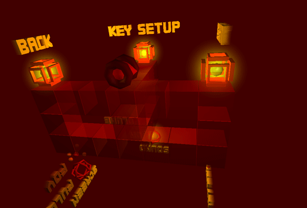
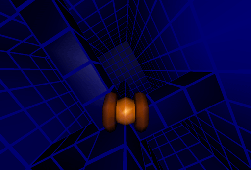
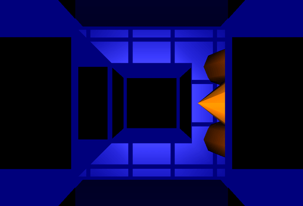

|
This is the second series of screenshots.
My flatmate Juan told me, I should choose different colors in order to create more athmosphere. I took this criticism serious and implemented a color scheme mechanism.
The gates that "beam" kiki to the next level look much nicer now.
Lights are used to create some athmosphere as well. With the disadvantage of slowing down the display rate :-(
The blue scheme ...  ... and the red scheme for the improved setup world.  Last but not least two screens I like for their simplicity.  That's all for now. If interested, check back end of September
(or later ;-) for a preview. |
||